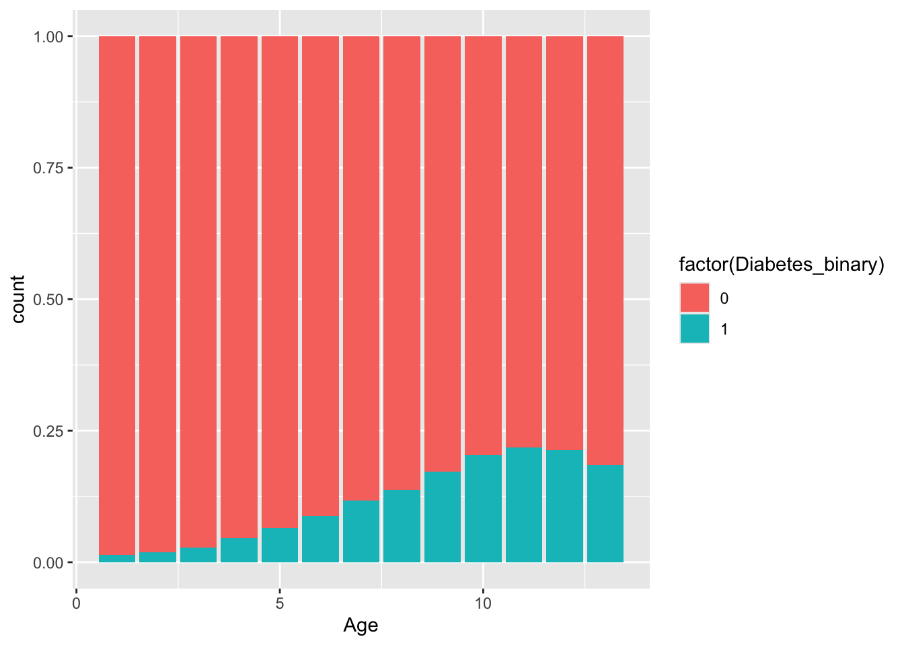
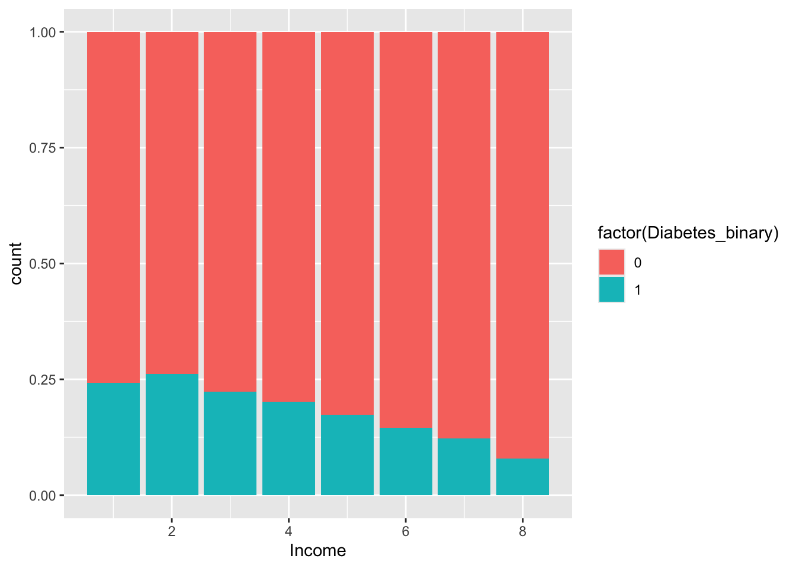
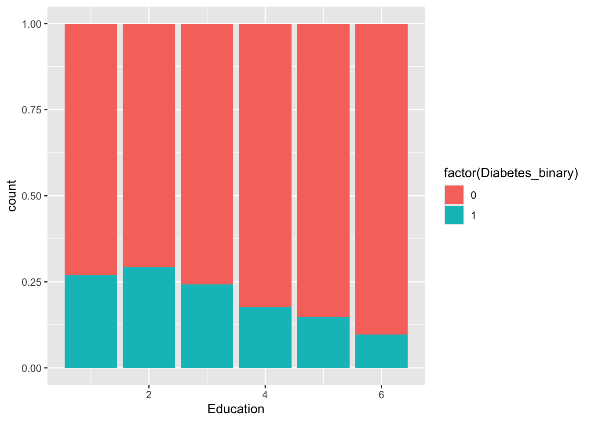
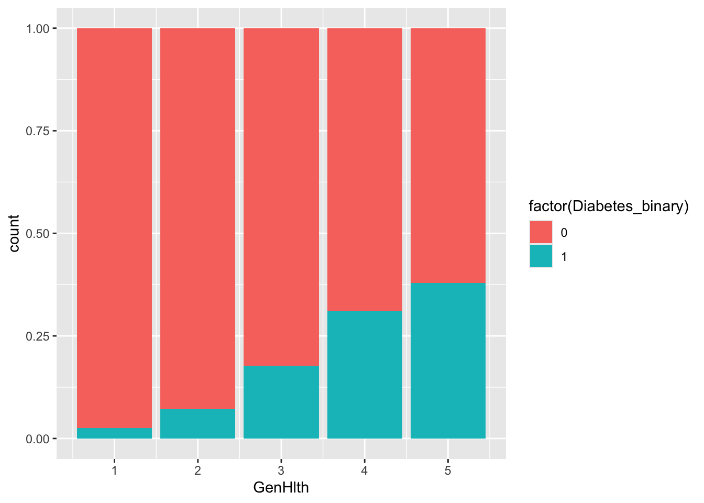
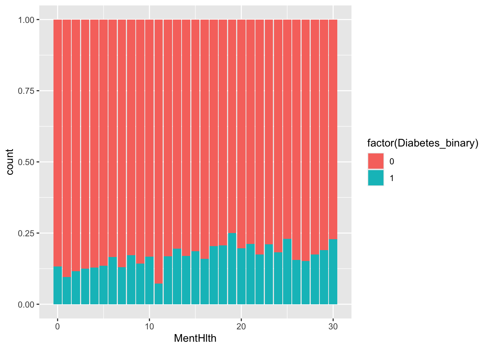
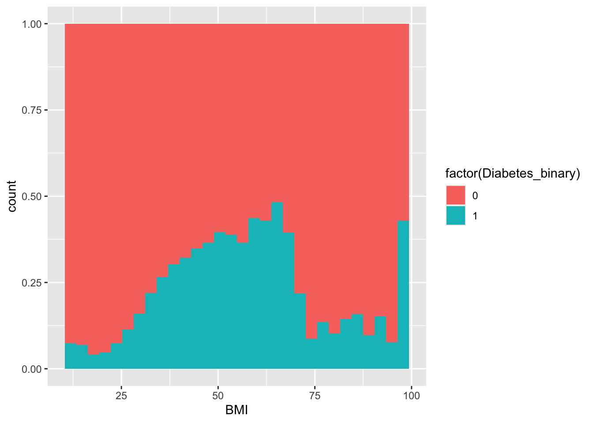
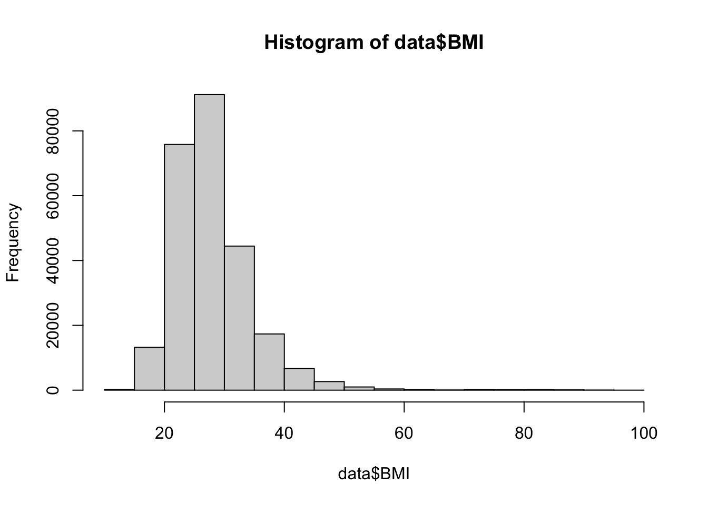

library(dplyr)
library(ggplot2)EDA
Exploratory Data Analysis
# load data
data <- read.csv("../data/diabetes_binary_health_indicators_BRFSS2015.csv")Check missing values
sum(is.na(data))[1] 0There are no missing values in the data.
Diabetes proportion
n <- nrow(data) # 253680 items
n
table(data$Diabetes_binary) / n[1] 253680
0 1
0.860667 0.139333 There are 25368 rows in the data. Out of this, it is seen that 14% of the data are diabetes=true and 86% do not have diabetes. This means that if the guess is just to put no diabetes for everything, the accuracy would be 86%, and any model should do better than this.
Exploring Yes/No Categories (14 out of 21)
helper <- function(category) {
# finds the proportions of the category for yes/no categories
# finds the proportion of each combination
# finds the percentages of diabetes based on the category
prop <- table(data[[category]]) / n
ct <- table(ifelse(data$Diabetes_binary == 1, "Diabetes", "NoDiabetes" ),
ifelse(data[[category]] == 1, category, paste0("No", category))) / n
explained <- t(t(ct) / ( ct[1,] + ct[2,]))
max(explained[,1]) * prop[2] + max(explained[,2]) * prop[1]
print(prop)
print(ct)
print(explained)
}Frequent Items
helper("HighBP")
0 1
0.5709989 0.4290011
HighBP NoHighBP
Diabetes 0.10487228 0.03446074
NoDiabetes 0.32412882 0.53653816
HighBP NoHighBP
Diabetes 0.24445690 0.06035167
NoDiabetes 0.75554310 0.93964833The split of the data on high blood pressure vs not high blood pressure is 57% and 42%, respectively. We can see of the 57% for 0 HighBP, 53.6% is no diabetes and 3.4% is diabetes. The proportion here is 93.9% and 6%, meaning if we flat-out guessed no diabetes for this NoHighBP items, we’d get a 93.9% accuracy. But we want to learn about the more rare class of diabetes. So a good thing to look at is the ratio between NoHighBP and HighBP. If we had diabetes, we’d be about 4x more likely to have HighBP. Other items in this category are HighChol, PhysActivity, Smoker, and DiffWalk.
Infrequent Items
helper("CholCheck")
0 1
0.0373305 0.9626695
CholCheck NoCholCheck
Diabetes 0.1383830022 0.0009500158
NoDiabetes 0.8242865027 0.0363804793
CholCheck NoCholCheck
Diabetes 0.14374923 0.02544879
NoDiabetes 0.85625077 0.97455121There are a set of items here where most of the rows are 1 value. Almost all respondents (96%) has had a cholesterol check within the last 5 years. So even if we got info from this, it wouldn’t apply in most cases. That said, if you did get info, the ratio is large (~7x). Other items in this category are Stroke, HeartDiseaseorAttack, and HvyAlcoholConsump.
Little to no information
helper("Fruits")
helper("Sex")
0 1
0.3657442 0.6342558
Fruits NoFruits
Diabetes 0.08157127 0.05776175
NoDiabetes 0.55268448 0.30798250
Fruits NoFruits
Diabetes 0.1286094 0.1579293
NoDiabetes 0.8713906 0.8420707
0 1
0.5596578 0.4403422
NoSex Sex
Diabetes 0.07257569 0.06675733
NoDiabetes 0.48708215 0.37358483
NoSex Sex
Diabetes 0.1296787 0.1516033
NoDiabetes 0.8703213 0.8483967These items don’t really have a spread of diabetes vs non-diabetes. Basically, if you knew someone was male or female, it wouldn’t tell you anything more about diabetes or not by itself. The same for Fruits, Veggies, AnyHealthcare, and NoDocbcCost. Now it’s possible that these proportions change in conjunction with another set of information (maybe fruits + high bp would have a better separation and fruit has typically high sugar content). It may be worth it to include in a tree build just for 1, to see if it makes a difference.
Exploring non-yes/no items of BMI, GenHlth, MentHlth, PhysHlth, Age, Education, Income
# leftover BMI, GenHlth, MentHlth, PhysHlth, Age, Education, Income
paste0(cor(data$MentHlth, data$Diabetes_binary), " MentHlth")
paste0(cor(data$PhysHlth, data$Diabetes_binary), " PhysHlth")
paste0(cor(data$GenHlth, data$Diabetes_binary), " GenHlth")
paste0(cor(data$BMI, data$Diabetes_binary), " BMI")
paste0(cor(data$Age, data$Diabetes_binary), " Age")
paste0(cor(data$Education, data$Diabetes_binary), " Education")
paste0(cor(data$Income, data$Diabetes_binary), " Income")[1] "0.0693150826381003 MentHlth"
[1] "0.171336700387463 PhysHlth"
[1] "0.29356906307932 GenHlth"
[1] "0.216843060203153 BMI"
[1] "0.177441872167362 Age"
[1] "-0.124455969216236 Education"
[1] "-0.163918786800468 Income"The highest correlation is General Health (1 being best and 5 being worst). So higher age, thinking about physical or mental health, generally worse health ratings, and higher BMI have positive correlations (leading towards diabetes). Higher education and higher income lead towards not having diabetes. Let’s look at some plots.
ggplot(data, aes(x = Age, fill = factor(Diabetes_binary))) +
geom_bar(position = "fill")
ggplot(data, aes(x = Income, fill = factor(Diabetes_binary))) +
geom_bar(position = "fill")
ggplot(data, aes(x = Education, fill = factor(Diabetes_binary))) +
geom_bar(position = "fill")
ggplot(data, aes(x = GenHlth, fill = factor(Diabetes_binary))) +
geom_bar(position = "fill")
ggplot(data, aes(x = MentHlth, fill = factor(Diabetes_binary))) +
geom_bar(position = "fill")
ggplot(data, aes(x = PhysHlth, fill = factor(Diabetes_binary))) +
geom_bar(position = "fill")ggplot(data, aes(x = BMI, fill = factor(Diabetes_binary))) +
geom_histogram(position = "fill")`stat_bin()` using `bins = 30`. Pick better value with `binwidth`.
hist(data$BMI, breaks = 20)
Age, GenHlth, and BMI are generally supported as having an effect on the response. BMI is quite rare after values of 40, and with diabetes being a generally rare class, it makes sense for the chart to lose shape at the higher values. PhysHlth and MentHlth are not the best and likely represented a good amount through GenHlth reporting, so let’s just use that. As for education and income, they look viable to use, but don’t make a lot of sense for explainability of outcome. These are likely represented by way of effect of income on MentHlth for example (and many other categories, like needing to see a doctor but couldn’t past 12 month). These will intentionally not be used.
Bundling frequent and infrequent items (general idea of presenting with more items is more likely to suggest for diabetes). This is common in the health industry.
# summing across the common items that have an effect
# summing across the rare items that have an effect
data_fixed <- data |>
mutate(
count_common = rowSums(across(c(HighBP, HighChol, Smoker, PhysActivity, DiffWalk))),
count_rare = rowSums(across(c(CholCheck, Stroke, HeartDiseaseorAttack, HvyAlcoholConsump)))
) |>
select(-c(Fruits, Veggies, AnyHealthcare, NoDocbcCost, Income, Education, PhysHlth, MentHlth))
table(db = data_fixed$Diabetes_binary, common = data_fixed$count_common)
table(db = data_fixed$Diabetes_binary, rare = data_fixed$count_rare) common
db 0 1 2 3 4 5
0 8094 63874 72014 49193 21853 3306
1 409 3039 8275 12248 9193 2182
rare
db 0 1 2 3 4
0 8159 177971 29100 3019 85
1 174 25047 8363 1738 24